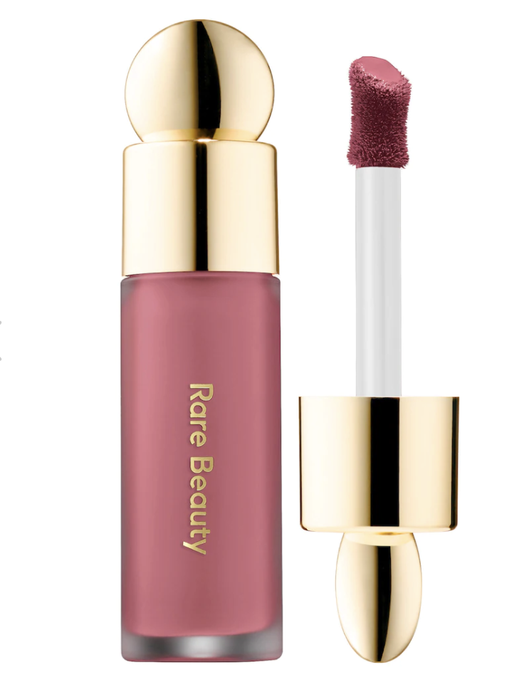
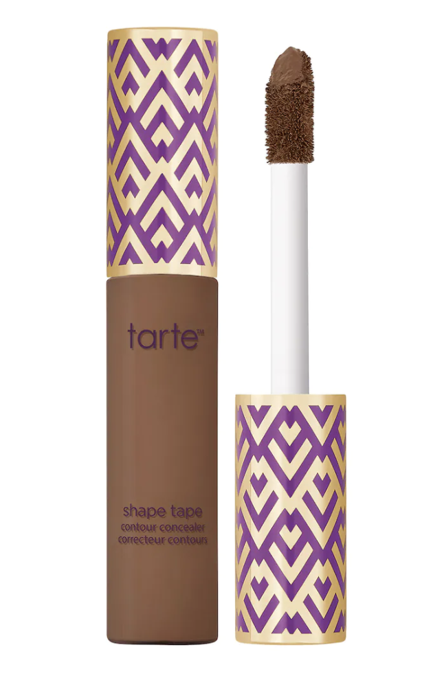
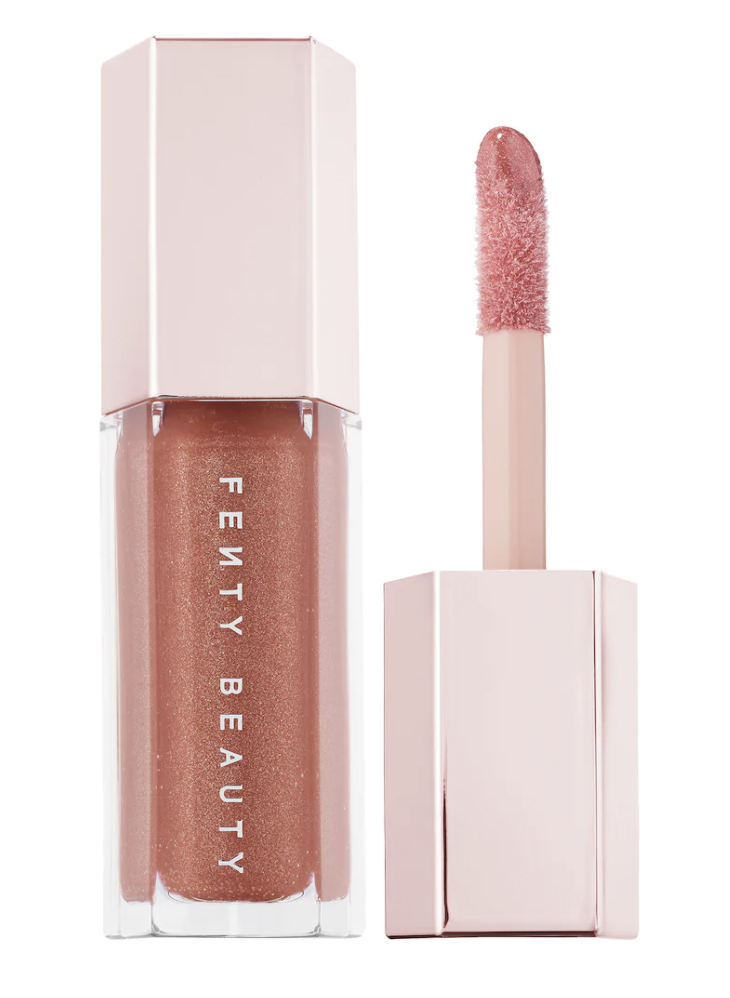
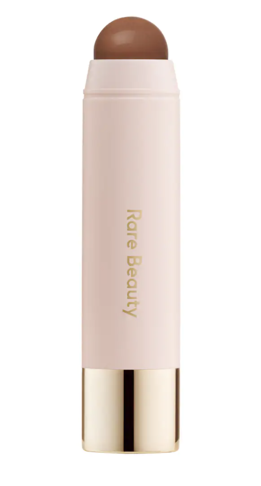

I want people to understand the importance of makeup. Everyone is beautiful with makeup and without it. Makeup is a tool
that is powerful and it has become the most used tool by women. Many believe makeup is just worn to hide insecurities,
but it is more than that. Makeup is art. We are able to create a variety of looks with a simple brush. People are
paid to do makeup because it is hard and requires time and practice. Essentially, it is a skill. People blend different
shades of colours and create a sculpted face. It is life-changing. You can just roll off your bed and choose which version
of yourself you want the world to see today. Maybe you want more defined cheekbones, a poutier lip, or slightly arched
eyebrows. The point is, makeup is a creative outlet that helps us feel more confident about ourselves. There might be somethings
you do not like about your face and chose to cover them as you do not want people to focus on the pimple in between your eyebrows.
Makeup allows you to fake it until you achieve your skin goals. While we all have flaws, and we do not have to hide them, sometimes
we want the world to notice more than our imperfections. Many might not know this, but makeup can also contain ingredients that
protect your skin, so why not wear some. Most importatnly, makeup is theraputic as it allows people to release their pent up emotions and
experince peace in thier minds. Makeup is bliss.
The makeup industry has not always been inclusive in terms of their shade ranges in foundations, concealers, and blushes. It is slowly
getiting there. The products I am going to recommend come in various shades so nobody feels left out. Do not be afraid to give them
a shot.
The Nars light reflecting advanced skincare foundation is a medium coverage liquid foundation which comes in thirty-six different
shades. The foundation is for all skin types and is meant to give a natural finish. In addition, this foundation improves skin
over-time as it contains ingredients like biomimetic oat and Japanese lilyturf. Biomimetic oat reduces the appearance of redness
while Japanese lilyturf helps build and maintain a strong skin barrier. Click
here
to purchase.
Soft Pinch Liquid Blush

The Rare Beauty soft pinch liquid blush is a medium coverage liquid formula that is meant to give a radiant and matte finish. It is long
lasting, which means you do not have to worry about it not staying in place. It blends in very beautifully with a sponge or brush and the
best part is that it is easy to apply. It is very pigmented, so a little goes a long way. The blush comes in seven shades.Click
here
to purchase.
Shape Tape™ Concealer

The Tarte shape tape concealer is a full coverage liquid concealer. The concealer comes in thirty-five shades and is meant for all skin
types. The concealer is long lasting and waterproof, so if you feel like takin a swim, give it a shot. It contains ingredients like shea
butter and licorice roo. Shea butter helps smooth skin and fights breakouts, while licorice roo brightens and colour corrects. It is
very easy to apply and gives a smooth finish.Click
here
to purchase.
Gloss Bomb Universal Lip Luminizer

The Fenty Beauty lip gloss is a lip luminizer which leaves lips looking shiny and fuller. The lip gloss comes in six different
colours. It is non-sticky formula, meaning you do not have to worry about your getting your stuck tp your lips. The gloss gives
a shimmery finish and has a peach-vanilla scent. Click
here
to purchase.
Warm Wishes Effortless Bronzer Sticks

The Rare Beauty bronzer stick is a light coverage bronzer stick. It comes in five different shades. It is long lasting and leaves you
with a natural finish. The bronzer is also weightless and blends in smoothly, allowing you to sculpt your face easily. In addition, it
is also waterproof, so feel free to dance in the rain. Click
here
to purchase.
MAKEUP TUTORIAL:
If you are a beginner and need some help in terms applying makeup, here is a tutorial I found on YouTube that will walk you through
every step. It is a natural look and easy to attain. If you keep pracitcing, soon you will be able to apply makeup in no time.